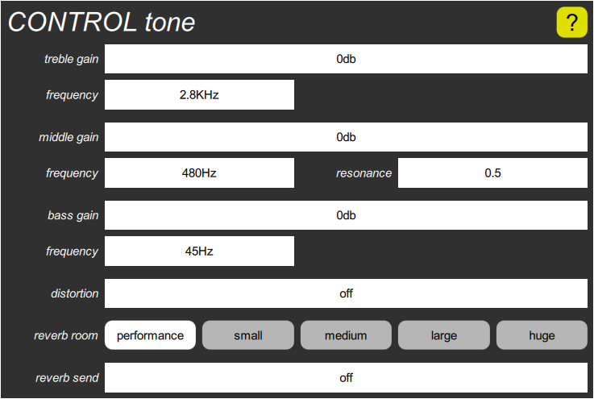

CONTROL tone cluster

All voices that belong to a particular virtual instrument are combined together and fed into a stereo three-band parametric equalizer, then a stereo distortion effect, and finally into one of the reverb rooms. This cluster contains seven parameters for controlling the tone, one for controlling the distortion, and two for overriding the reverb performance controls.
The tone control has long sliders for the treble gain, the middle gain, and the bass gain, and short sliders for the treble frequency, the middle frequency, the middle resonance, and the bass frequency.
The distortion control has one long slider, which introduces symmetric (odd harmonic distortion) on the positive side, and asymmeteric (even harmonic) on the negative side.
The reverb room control has five buttons for selecting the room size, and the reverb send slider sets the send level. If reverb room is set to “performance”, the reverb performance controls derived from the global reverb room and reverb send parameters take effect, and the program’s reverb send is ignored.